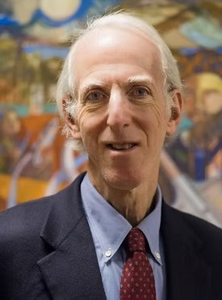
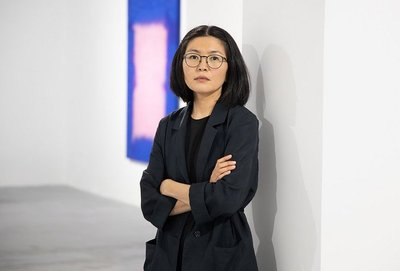
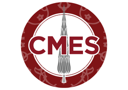
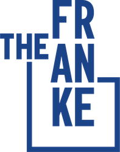

The first Central Asian Studies Conference at the University of Chicago
April 17–18, 2026 · Ida Noyes Library, University of Chicago
We are excited to announce the first-ever Central Asian Studies Conference at the University of Chicago, organized by the university’s Central Asian Studies Society and taking place on April 17–18, 2026.
Throughout Central Asia, embodied culture is expressed through art and culture: oral traditions, written poetry and literature, textiles, music, and many other media. Creative acts and works have been intertwined with collective experiences ranging from celebrations to invasions to revolutions, working to represent and shape memory and identity.
Our conference centers reflections on art, music, oral traditions, literature and other cultural practices as not only objects of study, but also as sources of inspiration, tangible connections to the past and means to understand the present. We are creating a space for young researchers interested in matters of culture and identity to meet, learn about, and learn from each other.
“What can art and culture tell us about the process of identity formation? What is the relationship between culture and politics? How does art and culture reflect Central Asianness, whether as a unified identity and/or a condition of great diversity and difference?”


Register now to attend the inaugural Central Asian Studies Conference at the University of Chicago.
Two days of extraordinary performances featuring masters of traditional and contemporary Central Eurasian music, from Tuvan throat singing to Kazakh kobyz, Uzbek tor, Kyrgyz komuz, and Tibetan gorshey dance.

